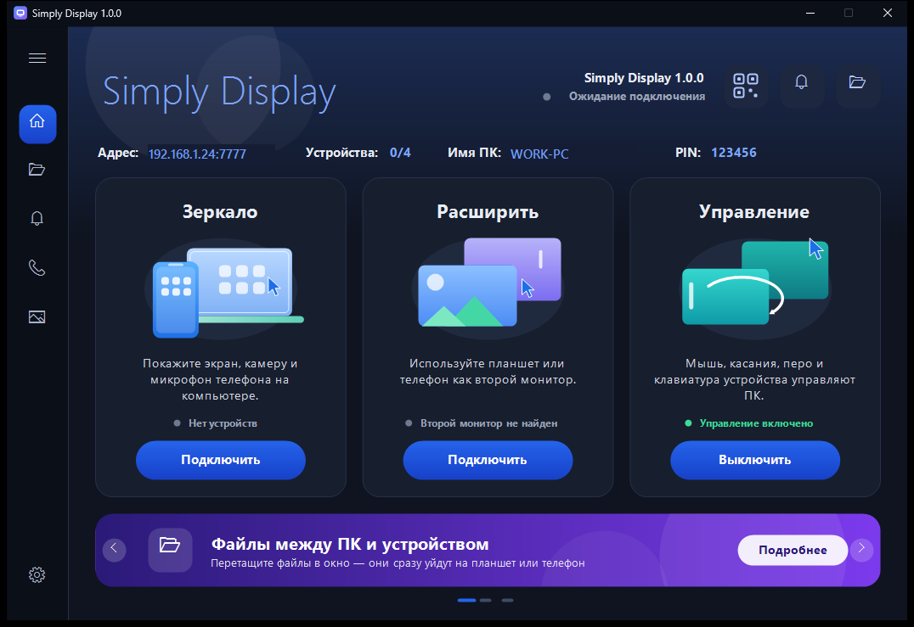
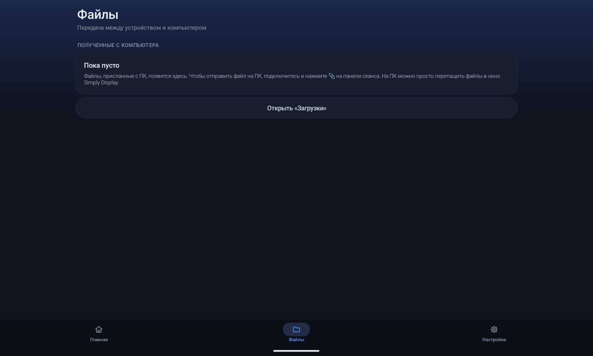
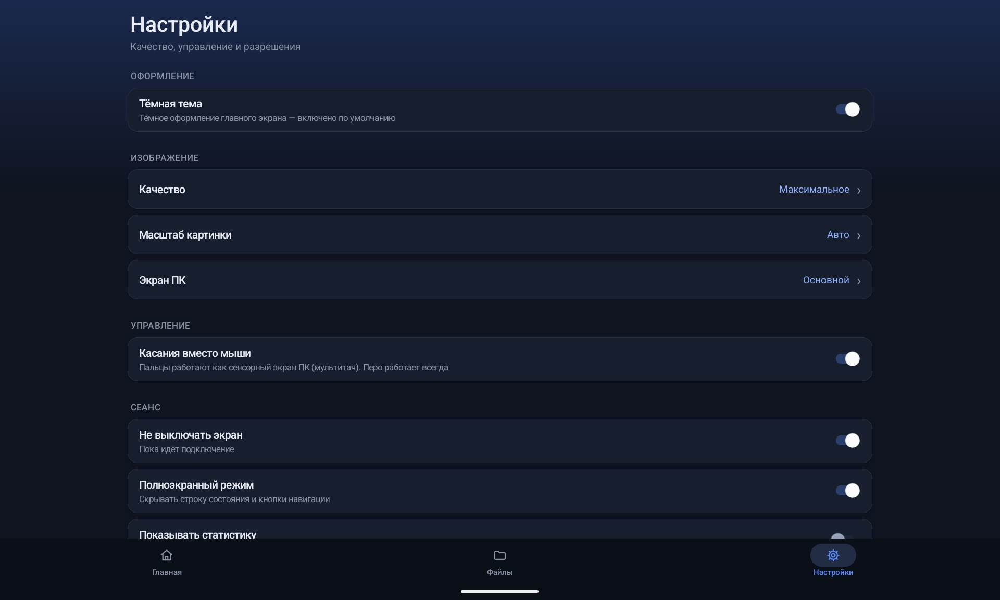
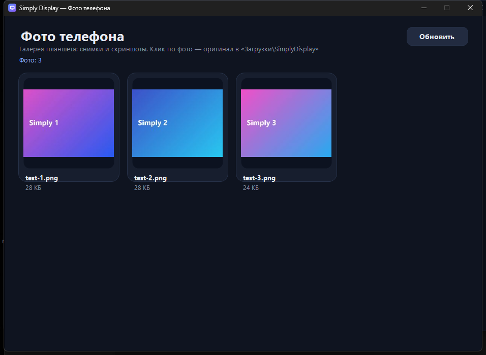
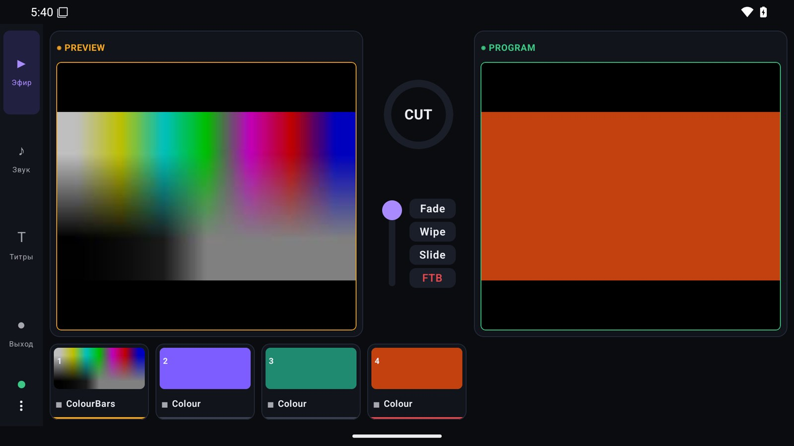
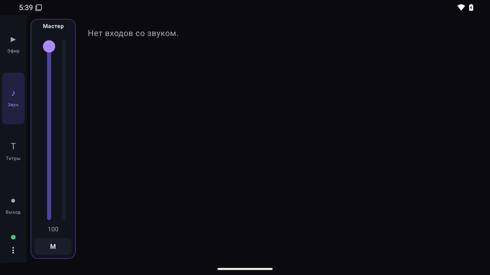
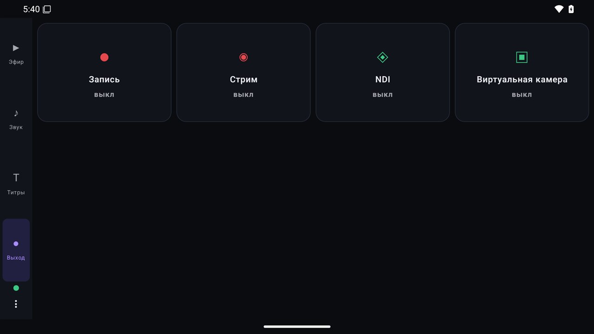

Как работать с приложениями.
Пошагово и со скриншотами: выйти в эфир в Simply Cast, подключить планшет как второй экран и управлять микшером с телефона.
Первый эфир за пять шагов.
Видеомикшер: камеры, экран, видео и потоки собираются в кадр и уходят в эфир, запись или на стриминговую площадку.
-
 1
1Установите и запустите
Скачайте установщик на странице «Скачать» и запустите его. Подойдёт Windows 10 (2004) или 11, 64 бита. Регистрация не нужна.
В окне слева находится превью — то, что вы готовите, справа эфир — то, что видят зрители. Внизу — полоса входов, аудиомикшер и выходы.
-
 2
2Добавьте входы
Откройте меню «Добавить вход» и выберите источник: камеру, экран или окно, видео и видеосписок, изображение, документ (PDF, PowerPoint, Word, Excel), поток RTSP/SRT/HLS, NDI, веб-страницу, титры, часы или таймер.
Каждый добавленный вход появляется плиткой в полосе входов. Если вы пока не знаете, с чего начать, возьмите мастер первого шоу: он создаст плитки сам.
-
 3
3Соберите кадр и переведите в эфир
Нажмите на плитку — вход попадёт в превью. Переведите его в эфир переходом: врезкой, автопереходом или эффектом (Fade, Wipe, Slide и другие). Можно двигать T-bar вручную или нажать Space.
Кнопка «в чёрное» плавно гасит эфир. Оверлеи (титры, логотип) включаются поверх эфира одним нажатием.
-
4
Настройте звук
В аудиомикшере у каждого входа есть своя громкость и метр. Громкость показывается в LUFS. Доступны шины, solo и AFV (звук следует за видео), так что звук остаётся синхронным с картинкой.
-
5
Выходите в эфир или записывайте
Нажмите «Выйти в эфир», чтобы отправить поток на сервер (RTMP, RTMPS или SRT), или «Записать», чтобы сохранить файл. Можно делать и то и другое одновременно, в несколько направлений сразу.
Кодирование идёт на видеокарте NVIDIA или AMD, а без неё — встроенным кодеком Windows. Ключи стримов хранятся в диспетчере учётных данных Windows, а не в файле проекта.
Планшет как второй монитор.
Сервер ставится на компьютер, приложение — на планшет или телефон. Устройства должны быть в одной сети Wi‑Fi или соединены по USB.
-

1Поставьте сервер на компьютер
Запустите установщик Simply Display для Windows. В окне сервера вы увидите адрес, PIN и имя компьютера, а по кнопке с QR-значком — QR-код для быстрого подключения.
В окне три режима: Зеркало (экран компьютера на устройстве), Расширить (устройство как второй монитор) и Управление (касания, мышь и перо управляют ПК).
-
 2
2Подключите планшет или телефон
Установите APK на Android (разрешите установку из неизвестных источников). Откройте приложение: компьютеры в сети найдутся сами, в списке «Рядом».
Самый быстрый способ — нажать «Сканировать QR-код с экрана ПК». Вручную: введите IP-адрес компьютера и PIN из окна сервера, выберите «Основной экран» или «Второй монитор» и нажмите «Подключиться». Есть и кнопка «По USB».
-

3Передавайте файлы
На компьютере просто перетащите файл в окно Simply Display — он сразу уйдёт на устройство. Принятые файлы показываются на вкладке «Файлы», кнопка «Открыть «Загрузки»» открывает папку.
Чтобы отправить файл с устройства на ПК, подключитесь и нажмите значок скрепки на панели сеанса.
-

4Настройте под себя
На вкладке «Настройки» выберите качество изображения и масштаб картинки, укажите, какой экран ПК показывать (основной или другой), включите «Касания вместо мыши» (перо работает всегда), полноэкранный режим и запрет выключения экрана во время сеанса.
-

5Фото, звонки и уведомления на ПК
Галерея телефона открывается на компьютере отдельным окном «Фото телефона». Клик по снимку открывает оригинал в папке «Загрузки\SimplyDisplay». Уведомления, звонки и SMS тоже видны в окнах на компьютере. Весь трафик шифруется и ходит только в вашей сети.
Эфиром — с планшета.
Пульт к Simply Cast: показывает превью и эфир, переключает входы, управляет звуком, титрами и выходами.
-

1Подключите пульт
В Simply Cast на компьютере откройте «Настройки → Управление с телефона (Android)» — появится QR-код. Установите APK на устройство, откройте приложение в той же сети Wi‑Fi и отсканируйте QR. Пульт подключится и покажет превью и эфир.
-
2
Вкладка «Эфир»
Слева — вертикальное меню: Эфир, Звук, Титры, Выход. На вкладке «Эфир» превью и эфир в формате 16:9, ниже входы. Выберите вход в превью и переведите его в эфир врезкой или эффектом (Fade, Wipe, Slide), включайте оверлеи. Камера телефона может работать ещё одним входом микшера.
-

3Вкладка «Звук»
Здесь фейдеры входов со звуком. Крайний слева — «Мастер»: общая громкость (на скриншоте 100) и кнопка M для выключения звука. Если сейчас нет входов со звуком, вкладка покажет об этом подсказку.
-

4Вкладка «Выход»
Четыре плитки: Запись, Стрим, NDI и Виртуальная камера. Под названием показано состояние (выкл или включено). Нажатием плитки вы запускаете или останавливаете нужный выход на компьютере, не вставая с места.